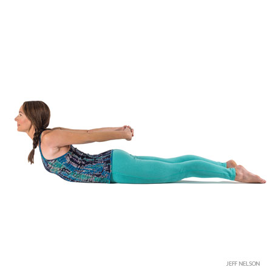

Calms the brain and helps relieve stress and mild depression
Stretches the shoulders, hamstrings, calves, and arches
Strengthens the arms and legs
Helps relieve the symptoms of menopause
Relieves menstrual discomfort when done with head supported
Helps prevent osteoporosisy
Improves digestion
Relieves headache, insomnia, back pain, and fatigue
Therapeutic for high blood pressure, asthma, flat feet, sciatica
Locust Pose

Pose Information
Sanskrit Name : Salabhasana
Pose Level : 1
Contradictions and Cautions
Headache
Serious back injury
Students with neck injuries should keep their head in a neutral position by looking down at the floor; they might also support the forehead on a thickly folded blanket.
Benefits
Strengthens the muscles of the spine, buttocks, and backs of the arms and legs